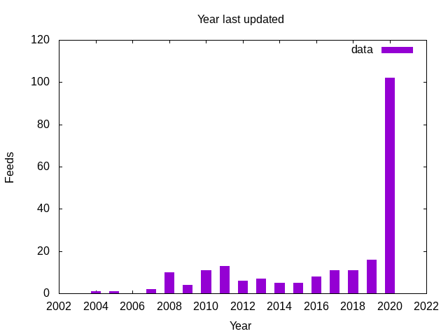

I still use RSS feeds as my main way of consuming stuff on the internet. Old school. I was looking at the list of things that I've subscribed to which has been imported back from the Google Reader days, and figured I'd do some exploration of ye old OPML file.
Setup the Gemfile
We'll need to pull in a few gems here:
source 'https://rubygems.org'
gem 'httparty' # To pull stuff from the network
gem 'feedjira' # To parse RSS feeds
gem 'nokogiri' # To parse XML
gem 'domainator' # To figured out the domain from the hostname
gem 'whois' # To see how old the domain is
gem 'whois-parser' # To actually make sense of the resultAnd install everything
bundleLook at domains
First, lets see what we can find out about the machine that hosts the feed. First we see if the hostname resolves, then we pull out the domain from the hostname to see when it was registered.
require 'resolv'
require 'domainator'
require 'whois'
require 'whois-parser'
def load_dns feed_url
uri = URI.parse feed_url
info = {}
info[:hostname] = uri.hostname
# See if the name is still on the internet
info[:resolved] = Resolv.getaddress uri.hostname
# Find the domain from the url
info[:domain] = Domainator.parse(feed_url)
# Lookup whois to see how old it is
client = Whois::Client.new
record = client.lookup(info[:domain])
result = record.parser
info[:registered] = result.registered?
info[:created_on] = result.created_on
info[:updated_on] = result.updated_on
info[:expires_on] = result.expires_on
info
end
if $PROGRAM_NAME == __FILE__
pp load_dns( "https://codex.happyfuncorp.com/feed" )
pp load_dns( "https://aestheticsofjoy.com/feed" )
end
{:hostname=>"codex.happyfuncorp.com",
:resolved=>"52.6.3.192",
:domain=>"happyfuncorp.com",
:registered=>true,
:created_on=>2010-10-27 19:39:32 UTC,
:updated_on=>2019-10-12 12:39:11 UTC,
:expires_on=>2020-10-27 19:39:32 UTC}
{:hostname=>"aestheticsofjoy.com",
:resolved=>"104.31.75.74",
:domain=>"aestheticsofjoy.com",
:registered=>true,
:created_on=>2009-05-14 04:36:37 UTC,
:updated_on=>nil,
:expires_on=>2021-05-14 04:36:37 UTC}
So this domain has been around for a few years! There's also
.contacts that we in theory could use, but poking around it seems like
things are wrapped up in privacy proxies for the most part.
Reading the OPLM
Lets say that you have a OPML file called feeds.opml. We'll parse the
XML to pull out the awesome that we need.
require 'nokogiri'
def load_opml feed_file
doc = Nokogiri.XML(File.read(feed_file))
doc.xpath( "//body//outline" ).select do |x|
x['xmlUrl']
end.collect do |x|
{ title: x['title'], feed_url: x['xmlUrl'], site_url: x['htmlUrl'] }
end
end
if $PROGRAM_NAME == __FILE__
load_opml( "feeds.opml" ).each do |x|
printf "%35s %s %s\n", x[:title], x[:feed_url], x[:site_url] if x[:feed_url]
end
endWhich prints out all those old RSS feeds, in all their 375 lines of glory in my case.
Testing loading a Feed
Loading the feed and parsing it is fairly simple using feedjira. We pull in the feed with HTTParty, and just pass the body right into feedjira. One statistic that's interesting is the generator, which is the blogging platform that the person is using. It'll be interesting to see what the world is using.
We also need to deal with the fun world of redirect, so lets put in a bit of logic for that.
require 'feedjira'
require 'httparty'
def load_feed feed_url
resp = HTTParty.get feed_url
if resp.code == 200
Feedjira::Feed.add_common_feed_element("generator")
feed = Feedjira.parse(resp.body)
info = {
title: feed.title,
feed: feed_url,
link: feed.url,
description: feed.description,
generator: feed.generator,
entries: feed.entries.length
}
if feed.entries.length > 0
info[:last_published] = feed.entries.first.published
info[:earliest_post] = feed.entries.last.published
end
info
else
puts "Response status #{resp.code}"
{}
end
end
# Test harness
if $PROGRAM_NAME == __FILE__
feed_info = load_feed "https://willschenk.com/feed.xml"
feed_info.each { |key,value| puts "|#{key}|#{value}|"}
endLooking for renamed feeds
It's possible that the feed has simply moved and never gotten update.
Perhaps the site is still there serving HTML, but they switch
platforms years ago and the feed url never got updated. So lets go
through all of the output and see for the domains that still resolve
if the root has a link alternative defined inside of the head block
and then try and get that new feed. Who knows what we might discover!
require 'nokogiri'
require 'httparty'
def find_feed_from_url feed_url
puts "Looking at #{feed_url}"
resp = HTTParty.get feed_url, timeout: 10
if resp.code == 200
page = Nokogiri.parse resp.body
page.css( 'head link[rel="alternate"]' ).each do |x|
url = x['href']
return URI.join( feed_url, x['href'] ).to_s
end
else
puts "Unable to load #{feed_url} #{resp.code}"
end
nil
end
# Test harness
if $PROGRAM_NAME == __FILE__
puts find_feed_from_url( "http://willschenk.com" )
puts find_feed_from_url( "http://tomcritchlow.com/" )
end
Note that in the first case we pass in a http link which gets updated
to a https served feed, and in the second case it's a relative link
that gets the correct final link.
Looking at http://willschenk.com https://willschenk.com/feed.xml Looking at http://tomcritchlow.com/ http://tomcritchlow.com/feed.xml
:END:
Combining everything
The idea here is that we will go through all the feeds and look to see if their domain is still active. If it is, we attempt to pull in the feed to fill in the rest of the information. And from there we can decide what it is that we want to do.
require 'csv'
require './load_dns'
require './load_feed'
require './load_opml'
require './load_alt_link'
headers = [ :site_url, :feed_url, :old_feed_url, :resolved,
:registered, :created_on, :updated_on, :title, :link,
:description, :generator, :entries, :earliest_post,
:last_published]
CSV.open "feed_info.csv", "w" do |csv|
csv << headers
feeds = load_opml "feeds.opml"
feeds.each do |feed|
whois = {}
feed_info = {}
site_url = feed[:site_url]
feed_url = feed[:feed_url]
feed[:old_feed_url] = feed_url
if !site_url.nil? && site_url != ""
# Look for updated feed
begin
puts "Check to see if #{feed_url} has an update"
new_feed_url = find_feed_from_url site_url
if new_feed_url
feed_url = new_feed_url
feed_info[:feed_url] = feed_url
end
rescue
puts "Error looking up #{site_url}"
end
end
begin
puts "Getting whois for #{feed_url}"
whois = load_dns feed_url
if whois[:resolved]
puts "Loading #{feed_url}"
feed_info = load_feed feed_url
pp feed_info
else
puts "#{feed_url} doesn't resolve"
end
rescue Resolv::ResolvError
puts "No host"
rescue Exception => e
puts "Error with #{feed_url}"
puts e
puts "************"
end
csv << headers.collect { |x| feed[x] || whois[x] || feed_info[x] }
end
endThis goes through all of the feeds, so it will take a while to run.
Looking at some stats
Lets look at what the state of my RSS feeds are looking like, here in June of 2020.
require 'csv'
stats = { total: 0, resolved: 0, last_month: 0, last_year: 0,
has_entries: 0, total_entries: 0, generator: {},
updated_year: {}, feed_active: {} }
headers = nil
CSV.open( "feed_info.csv" ).each do |line|
if headers.nil?
headers = line
else
stats[:total] += 1
if line[headers.index( "resolved" )]
stats[:resolved] += 1
end
entries = line[headers.index( "entries" )]
if !entries.nil?
stats[:has_entries] += 1
stats[:total_entries] += entries.to_i
end
updated_on = line[headers.index( "last_published" )]
if !updated_on.nil? && updated_on != ""
updated_on = Date.parse( updated_on )
days_old = (Time.now.to_date - updated_on).to_i
if days_old < 30
stats[:last_month] += 1
end
if days_old < 365
stats[:last_year] += 1
g = line[headers.index( "generator" )]
# Collapse some where the username is in the generator field
g = 'LiveJournal' if g =~ /LiveJournal/
g = 'Tumblr' if g =~ /Tumblr/
stats[:generator][g] ||= 0
stats[:generator][g] += 1
end
year = updated_on.year.to_i
if year > 1900 # Validation
stats[:updated_year][year] ||= 0
stats[:updated_year][year] += 1
end
earliest_post = line[headers.index( "earliest_post" )]
if !earliest_post.nil? && earliest_post != ""
earliest_post = Date.parse( earliest_post )
if earliest_post.year > 1900 # Validation
(earliest_post.year..updated_on.year).each do |year|
stats[:feed_active][year] ||= 0
stats[:feed_active][year] += 1
end
end
end
end
end
end
puts "Overall"
puts "| Total | #{stats[:total]} |"
puts "| Resolved | #{stats[:resolved]} |"
puts "| Active with 30 days | #{stats[:last_month]} |"
puts "| Active within a year | #{stats[:last_year]} |"
puts "| Feeds with entries | #{stats[:has_entries]} |"
puts "| Total posts | #{stats[:total_entries]} |"
puts "Last year updated"
years = stats[:updated_year].keys.sort.each do |year|
puts "|#{year}|#{stats[:updated_year][year]}|"
end
puts "Active per year"
years = stats[:feed_active].keys.sort.each do |year|
puts "|#{year}|#{stats[:feed_active][year]}|"
end
puts "Generators"
g = stats[:generator]
g.keys.sort { |a,b| g[b] <=> g[a]}.each do |generator|
puts "| #{generator} | #{g[generator]} |" if g[generator]>1
endSummary
| Total | 358 |
| Resolved | 322 |
| Active with 30 days | 75 |
| Active within a year | 111 |
| Feeds with entries | 222 |
| Total posts | 5708 |
So of the 358 feeds in the file, a whopping 75 are still being updated
and 222 are still on the internet! 111 posting within the last year.
It would be interesting to see when those 75 were first created and
how many posts they have to get a sense of who really is still
publishing with RSS.
Active each year
Are there more blogs out there in 2016? Did I start reading more then? Interesting that it crept up at this point. But it's also possible that the older subscriptions are part of the internet that disappeared.

How Old
Looks like a pretty regular number of feeds stop updating every year, though it's been creeping up slowly since 2014.

Generator
As for what people are using (I'm only showing the generators with 2 or more entries), here's a list of the generators for the blogs still actively updating.
| unset | 36 |
| https://wordpress.org/?v=5.4.2 | 16 |
| Hugo – gohugo.io | 7 |
| Tumblr | 6 |
| https://wordpress.org/?v=5.3.4 | 5 |
| Medium | 5 |
| Blogger | 5 |
| http://wordpress.com/ | 4 |
| Jekyll | 3 |
| LiveJournal | 2 |
| https://wordpress.org/?v=5.2.7 | 2 |
What's interesting to me here is:
-
Not everyone seems to set a generator, in fact most don't.
-
Most are running the latest version of WordPress, but why would it advertise the version number externally? Seems like that might not be the smartest thing since its such a broad attack target.
-
Hugo has a much stronger showing than GatbsyJS, but I perceive Gatsby to be more popular in overall front end development. Maybe people just don't make blogs out of it.
-
People still use tumblr!
Extracting Active Feeds
My whole goal here was to look for active feeds that I subscribe to
rather than just dumping everything into my elfeed.org file. Lets
write that now (finally!).
require 'csv'
headers = nil
CSV.open( "feed_info.csv" ).each do |line|
if headers.nil?
headers = line
else
updated_on = line[headers.index( "last_published" )]
if !updated_on.nil? && updated_on != ""
updated_on = Date.parse( updated_on )
days_old = (Time.now.to_date - updated_on).to_i
if days_old < 365
puts "** #{line[headers.index( "feed_url" )]}"
end
end
end
endRunning this yourself
The code for this page is all available in the site's repository. Or
just copy any paste from this page. You'll need an export of your
OPML file, name it feeds.opml, then run ruby feed_checker.rb to scan
through the internet, and ruby stats.rb to summarize the resulting
feed_info.csv file. I like csv for this since you could also easily
import it into Google Sheets and figure out whatever else you want
from it.